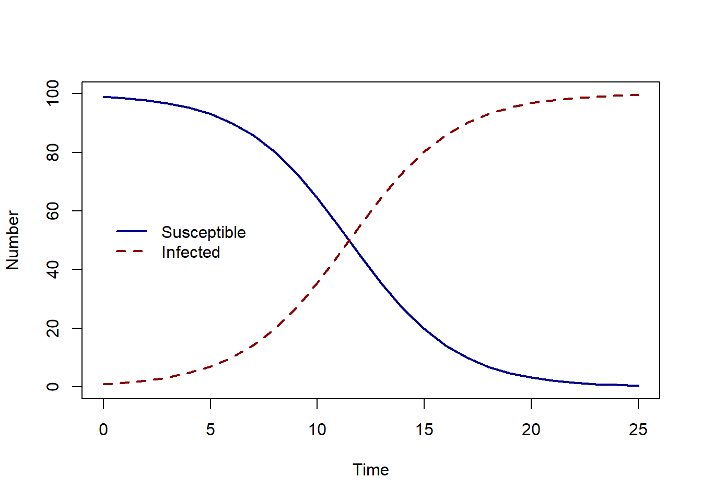
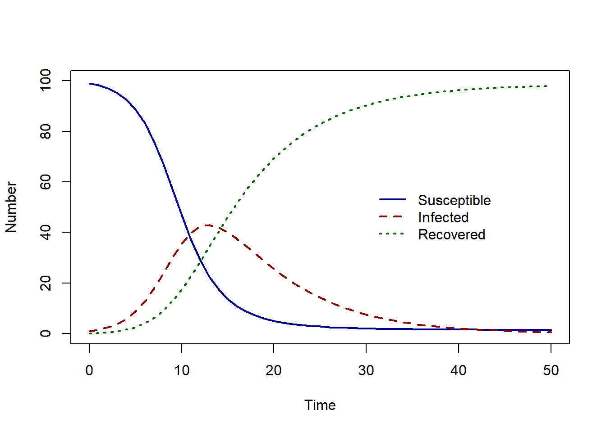

install.packages("deSolve")
library(deSolve)Using R
The first model we will implement in R is our Susceptible-Infected model. We have two equations representing the rate of change of the susceptible and infected population:
\[ \begin{aligned} \frac{dS}{dt} & = - \beta S I/N \\ \frac{dI}{dt} &= \beta S I/N \end{aligned} \] Assume that we have a population of 100 people, and there is one infected individual. To explore the infection dynamics through time we want to find the solution using initial conditions \(S(0)=99\) and \(I(0)=1\). In the population growth example, we found the analytical solution by integrating. In this case, we will also integrate but instead of finding an equation for the solution, we will find a numerical solution.
To find the numerical solution, we will use ODE solvers in the R packagedeSolve. The first step is to install and load the package.
The function we will use to find our numerical solution is called ode. There are a number of inputs to this function, we will need to specify the first five (remember to find the help page for the function type ?ode).
The first five inputs are as :
ode(y, times, func, parms, method)
Let’s look at these one a time.
The first input (or argument) is the initial state values for our system of ODEs. Our initial state values are \(S(0)=99\) and \(I(0)=1\). We will put these values into a vector called state_var as follows:
state_var <- c(S = 99, I = 1)
The second input is the times over which we want to find our numerical solution for. The interpretation of the time depends on how we specify our parameter values, we will assume our parameters are specified on a daily timescale. To find the solution from day 0 to day 25, we specify a time vector as : times <- seq(from = 0, to = 25, by = 1)
The third input is func, an R function which describes the system of ODE. The function itself has to be specified with three inputs:
- the current time
- the current value of the state variable
- the vector of parameters
and the function must return a list with first element a vector of the derivative values.
The function below describes the system of ODEs for the SI model. It takes inputs time, state_var and pars and returns our derivatives values dS and dI in a vector.
SI_model <- function(time, state_var, pars) {
# Extract state variables
S <- state_var["S"]
I <- state_var["I"]
N <- S + I
# Extract model parameters
beta <- pars["beta"]
# The differential equations
dS <- - beta * S * I / N
dI <- beta * S * I / N
# Return the derivatives as a result
sol <- list(c(dS, dI))
return(sol)
}The fourth input is the vector of parameter values. In the SI model, we only have one parameter values, \(\beta\). Therefore our vector of parameters values is : pars <- c(beta = 0.4)
The fifth input is the method to be used to find the numerical solution. We will specify our method as rk4, this is Runge-Kutta 4th order integration method. This method finds a numerical approximation to solution.
We then can use the function ode with our inputs to find the solution to our system of ODEs:
solution <- ode(y = state_var, times = times, func = SI_model, parms = pars,
method = rk4)
head(solution) time S I
[1,] 0 99.00000 1.000000
[2,] 1 98.51556 1.484439
[3,] 2 97.80165 2.198350
[4,] 3 96.75570 3.244304
[5,] 4 95.23631 4.763686
[6,] 5 93.05641 6.943592The solution has three columns:
- time
- number of susceptible individuals
- number of infected individuals.
To look at the solution over time, we can plot the solution using the plot function in R. We convert our solution to a data.frame so we can extract column names for plotting.
solution <- as.data.frame(solution)
plot(solution$time, solution$S, col = "darkblue", lwd = 2,
type = "l", ylim = c(0, 100), ylab = "Number", xlab = "Time")
lines(solution$time, solution$I, col = "darkred", lwd = 2, lty = 2)
legend(-0.1, 60, c("Susceptible", "Infected"), col = c("darkblue", "darkred"),
lwd = 2, lty = c(1, 2), bty = "n")
SIR model
We can extend our R code for the SI model to find the solution to the SIR model. The SIR model is described by a system of three ODEs:
\[ \begin{aligned} \frac{dS}{dt} & = - \beta S I/N \\ \frac{dI}{dt} &= \beta S I/N - \gamma I \\ \frac{dR}{dt} &=\gamma I \\ \end{aligned} \] We will assume that at the start of the epidemic, there are no recoveries. Therefore our initial state will be \(S(0)=99\), \(I(0)=1\) and \(R(0)=0\).
Which inputs to ode do we need to change?
Firstly, we must specify an additional initial state R=0 as follows, state_var <- c(S = 99, I = 1, R = 0).
We will use the same time vector, so the input times remains the same: times <- seq(from = 0, to = 50, by = 1).
We have one additional parameter, the recovery rate \(\gamma\). Therefore we add gamma to our parameter vector: pars <- c(beta = 0.6, gamma = 0.14).
We will need to make a few changes to our R function describing the SIR model. The inputs will remain the same, but within the function we will need to,
- extract our current value for the recovered state
- extract our parameter gamma
- add a line of code describing \(dR/dt\)
- and finally then make sure we return our solution to R.
Using the initial state and parameter values described above, try to recreate the plot below. Using the SI_model code as your base, make the necessary changes to the R function for an SIR model and rename your function SIR_model.
SIR model code
SIR_model <- function(time, state_var, pars){
# Extract state variables
S <- state_var["S"]
I <- state_var["I"]
R <- state_var["R"]
N <- S + I + R
# Extract model parameters
beta <- pars["beta"]
gamma <- pars["gamma"]
# The differential equations
dS <- - beta * S * I/N
dI <- beta * S * I/N - gamma * I
dR <- gamma * I
# Return the solved equations as a list
sol <- list(c(dS, dI, dR))
return(sol)
}
# What are our parameter values?
pars <- c(beta = 0.6, gamma = 0.14)
# Define time to solve equations
times <- seq(from = 0, to = 50, by = 1)
# What are the initial values (or conditions) of the state variables?
state_var <- c( S = 99, I = 1, R = 0)
# Solve the SIR model
solution <- as.data.frame(ode(y = state_var, times = times, func = SIR_model, parms = pars, method = rk4))
plot(solution$time, solution$S, col = "darkblue", lwd = 2,
type = "l", ylim = c(0, 100), ylab = "Number", xlab = "Time")
lines(solution$time, solution$I, col = "darkred", lwd = 2, lty = 2)
lines(solution$time, solution$R, col = "darkgreen", lwd = 2, lty = 3)
legend(30,60, c("Susceptible", "Infected", "Recovered"), col = c("darkblue", "darkred", "darkgreen"),
lwd = 2, lty = c(1, 2, 3), bty = "n")
Using the initial state and parameter values described above, use the SIR code to answer the questions in the following quiz.
Exercise
- How many susceptible, infectious and recovered individuals (to 2 decimal places) are there at day 10?
- How many susceptible, infectious, and recovered individuals (to 2 decimal places) are there at day 50?
- At what day is the epidemic peak (when there are the maximum number of infectious individuals)?
Solution
- How many susceptible, infectious and recovered individuals (to 2 decimal places) are there at day 10?
round(solution[which(solution$time == 10),],2) time S I R
11 10 46.85 35.69 17.46- How many susceptible, infectious, and recovered individuals (to 2 decimal places) are there at day 50?
round(solution[which(solution$time == 50),],2) time S I R
51 50 1.49 0.56 97.95- At what day is the epidemic peak (when there are the maximum number of infectious individuals)?
solution$time[which.max(solution$I)][1] 13References
K. Soetaert, T. Petzoldt, R.W. Setzer. Package deSolve: solving initial value differential equations in R. J. Stat. Softw., 33 (2010), pp. 1-25